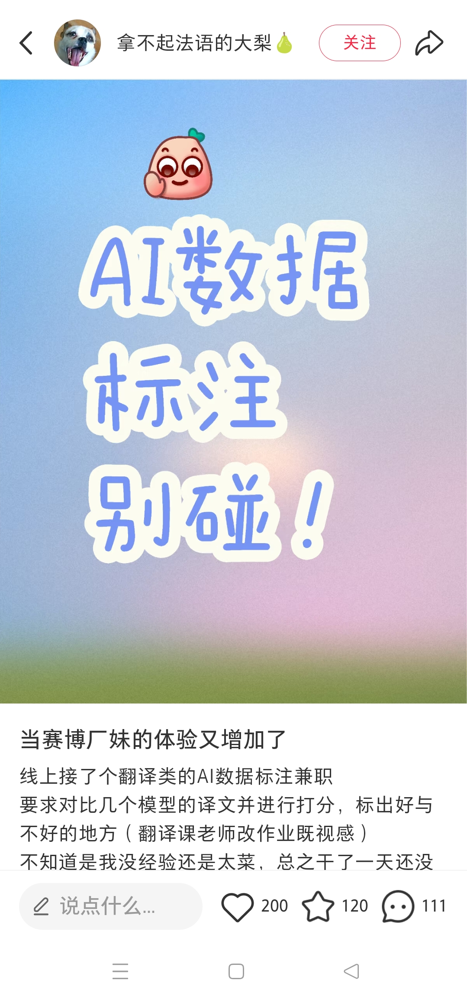
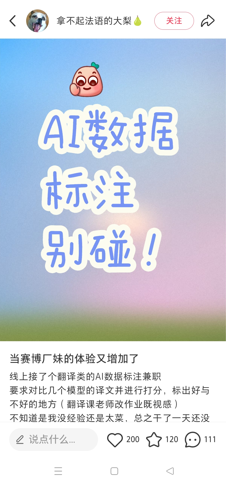

"你聊得很开心的AI女友，背后却是被当做耗材的肯尼亚小伙们。"
这并非虚构故事，而是AI时代全球产业链的真实切片。根据国际研究项目Data Worker's Inquiry披露的案例，肯尼亚内罗毕的迈克尔·杰弗里·亚细亚（Michael Geoffrey Asia）在贫民窟的出租屋里，正以每分钟40字的速度，同时扮演三个"AI虚拟女友"。
01. 逆向图灵测试：当人类必须证明自己像AI
迈克尔很快发现，这份工作并不像招聘描述那么简单。他实际上是在一家典型的外包公司工作：注册地址在澳大利亚墨尔本，实际运营中心在菲律宾，同时在肯尼亚、印度等地招募远程员工。公司的主营业务名为"AI for Dating"——出售可以约会聊天的数字人。
在贫民窟昏暗的出租屋里，凌晨三点的灯光下，迈克尔要在三四个虚构身份间切换。他的每分钟打字量必须超过40个，必须在规定时间内回复用户消息，必须保证用户的留存率——一切都被关键绩效指标严格监控。
02. 数字清洁工：互联网下水道的清理者
除了假扮AI恋人，另一项更为沉重的AI产业底层工作是内容审核。为了让ChatGPT等大模型变得"文明"，OpenAI等公司需要有人先去识别那些最肮脏、最暴力的数据。
03. 全球幽灵劳工：自动化乌托邦的月之暗面
这种"人类即服务"的模式并非个例。在印度，1000多名工人躲在摄像头背后，为亚马逊的"无人零售店"审核每一笔交易；在菲律宾，工人们远程操控着加拿大的网红送餐机器人Geoffrey。
产业链透视： AI时代，这套玩法被原封不动搬了回来——注册地在发达国家用来背书和融资，实际工作地在人力成本极低的发展中国家用来压缩成本。
04. 中国的数据标注：从"AI工厂"到"新石油"
这种模式在中国也留下了深刻痕迹。2015年至2020年，数据标注公司常被称为"AI工厂"。在河南、山西等地的县城，涌现出大量数据标注基地。
小红书上的"赛博厂妹"与产业升级
打开小红书，搜索"数据标注"，你会看到大量从业者的真实吐槽。他们自嘲为"赛博厂妹"或"AI时代的纺织工"："做了一天拉框，眼睛都要瞎了，这真的是AI吗？"
| 肯尼亚 AI陪伴 |
|
$1.5/h |
| 中国 基础标注 |
|
¥20/h |
| 中国 人文训练师 |
|
¥200+/h |
 

下一站：中国的AI人文训练师
当"耗材"试图变成"老师"，当数据标注从体力劳动升级为知识工作，我们见证的不仅是个体命运的差异，更是全球技术权力结构的变化。
进入第三章：灵魂导师